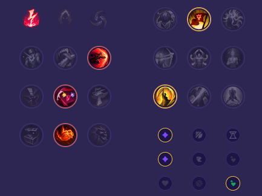

Starter: Tajemnicza Pieczęć Odnawialna Mikstura Core Bulid: Zmora Licza Buty Maga Płomień Cienia Full Bulid: Klepsydra Zhonyi Zabójczy Kapelusz Rabadona Kostur Pustki

Słaby przeciwko: - Yasuo - Akali - Galio - Diana - Fizz - Vex Dobry przeciwko: - Zed - Yone - Syndra - Veigar - LeBlanc - Xerath